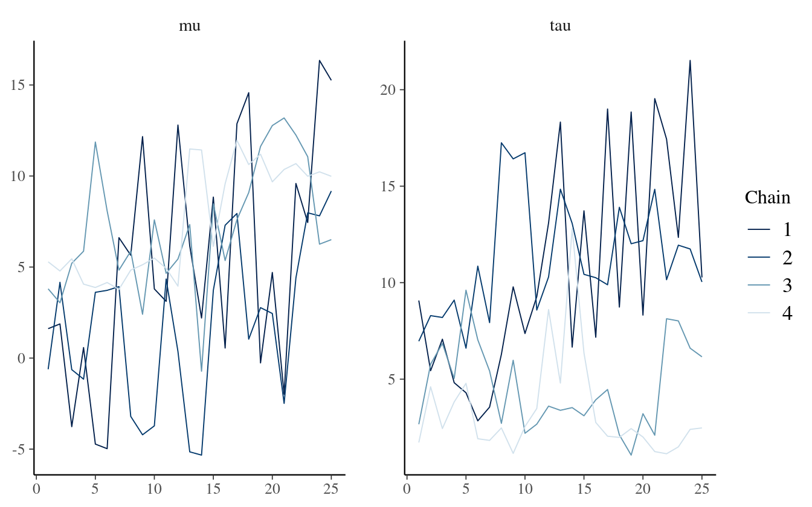

4 Model Fitting/Checking
Check your model before you wreck your model
This chapter serves as the formal home of definitions and explanations of concepts relating to Markov Chain Monte Carlo (MCMC) and other diagnostic tools when working with Bayesian inference models. I touched on the physics of Hamiltonian Monte Carlo (HMC) and the diagnostic tools that come with it in the previous chapter, but now I will go into more detail.
4.1 Fitting using HMC
Why do we need a sampler at all? Bayesian statistics and modeling stems from Bayes theorem (Equation (4.1)). The prior \(P(\theta)\) is some distribution over the parameter space and the likelihood \(P(X | \theta)\) is the probability of an outcome in the sample space given a value in the parameter space. To keep things simple, we generally say that the posterior is proportional to the prior times the likelihood. Why proportional? The posterior distribution is a probability distribution, which means that the sum or integral over the parameter space must evaluate to one. Because of this constraint, the denominator in (4.1) acts as a scale factor to ensure that the posterior is valid.
\[\begin{equation} P(\theta | X) = \frac{P(X | \theta)\cdot P(\theta)}{\sum_i P(X | \theta_i)} = \frac{P(X | \theta)\cdot P(\theta)}{\int_\Omega P(X | \theta)d\theta} \tag{4.1} \end{equation}\]
For simple models, the posterior distribution can sometimes be evaluated analytically. An example of this is in conjugate models, where the resulting posterior distribution is of the same type as the prior distribution, and an example of a conjugate model is the Beta distribution for inference about a proportion statistic. This is common in baseball for a player’s batting average. I don’t know a lot about baseball, but I know that hitting a baseball is a little less common than one in three swings, so a priori I believe the probability of hitting a baseball is distributed as \(\mathrm{Beta}(2, 5)\) because the expected value is \(\approx 0.29\) and not a lot of weight is given to any particular value. Throughout a game I follow one player and he hits four balls and misses six - data that can be modeled as a Binomial observation. To figure out the posterior distribution for batting average, I use Bayes’ theorem - posterior is proportional to the prior times the likelihood.
\[\begin{align*} P(\pi | y) &\propto P(y | \pi) \cdot P(\pi) \\ &= {10 \choose 4}\pi^{4} (1-\pi)^{6} \cdot \frac{\Gamma(2+5)}{\Gamma(2)\Gamma(5)} \pi^{2-1}(1-\pi)^{5-1} \\ &\propto \pi^{4+2-1}(1-\pi)^{6+5-1} \\ &= \pi^{6-1}(1-\pi)^{11-1} \end{align*}\]
The final line is the shape of a Beta distribution with parameters \(6=2+4\) and \(11=5+6\). The simple update rule is that for a prior \(\mathrm{Beta}(a, b)\) and observed data with \(y\) successes in \(n\) observations, the posterior distribution is \(\mathrm{Beta}(a + y, b + n - y)\). For the baseball player, the Bayesian estimate of his batting average is \(6/(6+11) \approx 0.353\), but still with a good amount of uncertainty as shown in figure 4.1.
Figure 4.1: After observing 4 hits in 10, the Beta(2,5) prior gets updated to become a Beta(6,11) posterior.
Conjugate models are great for simple observational data, but often it happens that the posterior distribution cannot be deduced from the model or that the integral in the denominator is complex or of a high dimension. In the former situation, the integral may not be possible to evaluate, and in the latter there may not be enough computational resources in the world to perform a simple grid approximation.
The solution is to use Markov Chain Monte Carlo (MCMC). The idea is that we can draw samples from the posterior distribution in a way that samples proportional to the density. This sampling is a form of approximation to the area under the curve (i.e. an approximation to the denominator in (4.1)). Rejection sampling (Gilks and Wild 1992) and slice sampling (Neal 2003) are basic methods for sampling from a target distribution, however they can often be inefficient8. NUTS is a much more complex algorithm that can be compared to a physics simulation. A massless “particle” is flicked in a random direction with some amount of kinetic energy in a probability field, and is stopped randomly. The stopping point is the new proposal sample. The No U-Turn part means that when the algorithm detects that the particle is turning around, it will stop so as not to return to the starting position. This sampling scheme has a much higher rate of accepted samples, and also comes with many built-in diagnostic tools that let us know when the sampler is having trouble efficiently exploring the posterior. I’ll talk more about these diagnostic tools throughout the remaining sections.
4.1.1 Diagnostic Tools
4.1.1.1 Trace Plots
Trace plots are the first line of defense against misbehaved samplers. They are visual aids that let the practitioner asses the qualitative health of the chains, looking for properties such as autocorrelation, heteroskedacity, non-stationarity, and convergence. Healthy chains are well-mixing and stationary. It’s often better to run more chains during the model building process so that issues with mixing and convergence can be diagnosed sooner. Even one unhealthy chain can be indicative of a poorly specified model. The addition of more chains also contributes to the estimation of the Split \(\hat{R}\) statistic, which I discuss in 4.1.1.2. Figure 4.2 shows what a set of healthy chains looks like.
Figure 4.2: An example of healthy chains.
There is a similar diagnostic plot called the rank histogram plot (or trank plot for trace rank plot). Vehtari, Gelman, et al. (2020) details the motivation for trank plots, but in short if the chains are all exploring the posterior efficiently, then the histograms will be similar and uniform. Figure 4.3 is from the same model as above but for the rank histogram.
Figure 4.3: A trank plot of healthy chains.
As the number of parameters in a model grows, it becomes exceedingly tedious to check the trace and trank plots of all parameters, and so numerical summaries are required to flag potential issues within the model.
4.1.1.2 \(\hat{R}\) and Split \(\hat{R}\)
The most common summary statistic for chain health is the potential scale reduction factor (Gelman, Rubin, and others 1992) that measures the ratio of between chain variance and within chain variance. When the two have converged, the ratio is one. I’ve already shared examples of healthy chains which would also have healthy \(\hat{R}\) values, but it’s valuable to also share an example of a bad model. Below is the 8 Schools example (Gelman et al. 2013) which is a classical example for introducing Stan and testing the operating characteristics of a model.
schools_dat <- list(
J = 8,
y = c(28, 8, -3, 7, -1, 1, 18, 12),
sigma = c(15, 10, 16, 11, 9, 11, 10, 18)
)The initial starting parameters for this model are intentionally set to vary between \(-10\) and \(10\) (in contrast to the default range of \((-2, 2)\)) and with only a few samples drawn in order to artificially drive up the split \(\hat{R}\) statistic. The model is provided as supplementary code in the appendix.
fit_cp <- sampling(schools_mod_cp, data = schools_dat, refresh = 0,
iter = 50, init_r = 10, seed = 671254821)Stan instantly warns about many different issues with this model, but the R-hat is the one of interest. The largest is \(1.68\) which is incredibly large

These chains do not look good at all! Let’s take a look at the \(\hat{R}\) values and see if we can calculate one of the values manually.
| Parameter | Rhat |
|---|---|
| mu | 1.234 |
| tau | 1.596 |
To calculate the (non split) \(\hat{R}\), first calculate the between-chain variance, and then the average chain variance. For \(M\) independent Markov chains, \(\theta_m\), with \(N\) samples each, the between-chain variance is
\[ B = \frac{N}{M-1}\sum_{m=1}^{M}\left(\bar{\theta}_m - \bar{\theta}\right)^2 \]
where
\[ \bar{\theta}_m = \frac{1}{N}\sum_{n=1}^{N}\theta_{m}^{(n)} \]
and
\[ \bar{\theta} = \frac{1}{M}\sum_{m=1}^{M}\bar{\theta}_m \]
The within-chain variance, \(W\), is the variance averaged over all the chains.
\[ W = \frac{1}{M}\sum_{m=1}^{M} s_{m}^2 \]
where
\[ s_{m}^2 = \frac{1}{N-1}\sum_{n=1}^{N}\left(\theta_{m}^{(n)} - \bar{\theta}_m\right)^2 \]
The variance estimator is a weighted mixture of the within-chain and cross-chain variation
\[ \hat{var} = \frac{N-1}{N} W + \frac{1}{N} B \]
and finally
\[ \hat{R} = \sqrt{\frac{\hat{var}}{W}} \]
Here is the calculation in R
param <- "mu"
theta <- p_cp[,,param]
N <- nrow(theta)
M <- ncol(theta)
theta_bar_m <- colMeans(theta)
theta_bar <- mean(theta_bar_m)
B <- N / (M - 1) * sum((theta_bar_m - theta_bar)^2)
s_sq_m <- apply(theta, 2, var)
W <- mean(s_sq_m)
var_hat <- W * (N - 1) / N + B / N
(mu_Rhat <- sqrt(var_hat / W))
#> [1] 1.134The \(\hat{R}\) statistic is smaller than the split \(\hat{R}\) value provided by Stan. This is a consequence of steadily increasing or decreasing chains. The split value does what it sounds like, and splits the chains in half and measures each half separately. In this way, the measure is more robust in detecting unhealthy chains. This also highlights the utility in using both visual and statistical tools to evaluate models.
4.1.1.3 Effective Sample Size
Samples from Markov Chains are typically autocorrelated, which can increase uncertainty of posterior estimates. I encountered this issue in the second iteration of the model building process, and the solution I used was to reparameterize the model to avoid steep log-posterior densities - the benefit of reparameterization is conveyed by the ratio of effective sample size to actual sample size in figure 4.4. When the HMC algorithm is exploring difficult geometry, it can get stuck in regions of high densities, which means that there is more correlation between successive samples.
Figure 4.4: Ratio of N_eff to actual sample size. Low ratios imply high autocorrelation which can be alleviated by reparameterizing the model or by thinning.
As the strength of autocorrelation generally decreases at larger lags, a simple prescription to decrease autocorrelation between samples and increase the effective sample size is to use thinning. Thinning means saving every \(k^{th}\) sample and throwing the rest away. If one desired to have 2000 posterior draws, it could be done in two of many possible ways
- Generate 2000 draws after warmup and save all of them
- Generate 10,000 draws after warmup and save every \(5^{th}\) sample.
Both will produce 2000 samples, but the method using thinning will have less autocorrelation and a higher effective number of samples. Though it should be noted that generating 10,000 draws and saving all of them will have a higher number of effective samples than the second method with thinning, so thinning should only be favored to save memory.
4.1.1.4 Divergent Transitions
Unlike the previous tools for algorithmic faithfulness which can be used for any MCMC sampler, information about divergent transitions is intrinsic to Hamiltonian Monte Carlo. Recall that the HMC and NUTS algorithm can be imagined as a physics simulation of a particle in a potential energy field, and a random momentum is imparted on the particle. The sum of the potential energy and the kinetic energy of the system is called the Hamiltonian, and is conserved along the trajectory of the particle (Stan Development Team 2020). The path that the particle takes is a discrete approximation to the actual path where the position of the particle is updated in small steps called leapfrog steps (see Leimkuhler and Reich (2004) for a detailed explanation of the leapfrog algorithm). A divergent transition happens when the simulated trajectory is far from the true trajectory as measured by the Hamiltonian.
A few divergent transitions is not indicative of a poorly performing model, and often divergent transitions can be reduced by reducing the step size and increasing the adapt delta parameter. On the other hand, a bad model may never be improved just by tweaking some parameters. This is the folk theorem of statistical computing - if there is a problem with the sampling, blame the model, not the algorithm.
Divergent transitions are never saved in the posterior samples, but they are saved internally to the Stan fit object and can be compared against good samples. Sometimes this can give insight into which parameters and which regions of the posterior the divergent transitions are coming from.
Figure 4.5: Divergent transitions highlighted for some parameters from the second iteration model. Divergent transitions tend to occur when both the hierarchical variance terms are near zero.
4.2 Prior Predictive Checks
I used prior predictive checks in the first iteration of the model to establish a few things pertaining to model adequacy and computational faithfulness. The first reason is to ensure that the selected priors do not put too much mass in completely implausible regions (such as really large JND estimates). Data simulated from the priors can also be used to check that the software works. When you have the exact priors that were used to generate the data, the fitting algorithm should be able to accurately recover the priors.
- transition to posterior predictive checks chapter
- fig 10 in for posterior predictive Gabry et al. (2019)
References
Gabry, Jonah, Daniel Simpson, Aki Vehtari, Michael Betancourt, and Andrew Gelman. 2019. “Visualization in Bayesian Workflow.” Journal of the Royal Statistical Society: Series A (Statistics in Society) 182 (2): 389–402.
Gelman, Andrew, John B Carlin, Hal S Stern, David B Dunson, Aki Vehtari, and Donald B Rubin. 2013. Bayesian Data Analysis. CRC press.
Gelman, Andrew, Donald B Rubin, and others. 1992. “Inference from Iterative Simulation Using Multiple Sequences.” Statistical Science 7 (4): 457–72.
Gilks, Walter R, and Pascal Wild. 1992. “Adaptive Rejection Sampling for Gibbs Sampling.” Journal of the Royal Statistical Society: Series C (Applied Statistics) 41 (2): 337–48.
Leimkuhler, Benedict, and Sebastian Reich. 2004. Simulating Hamiltonian Dynamics. Vol. 14. Cambridge university press.
Neal, Radford M. 2003. “Slice Sampling.” Annals of Statistics, 705–41.
Stan Development Team. 2020. Stan Modeling Language Users Guide and Reference Manual. https://mc-stan.org.
Vehtari, Aki, Andrew Gelman, Daniel Simpson, Bob Carpenter, Paul-Christian Bürkner, and others. 2020. “Rank-Normalization, Folding, and Localization: An Improved R-Hat for Assessing Convergence of Mcmc.” Bayesian Analysis.
Efficiency of a sampler is related to the proportion of proposal samples that get accepted.↩︎